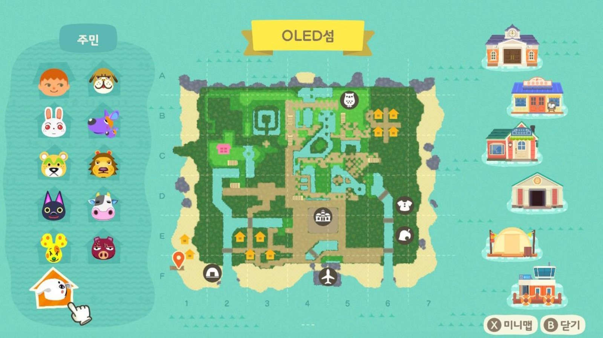
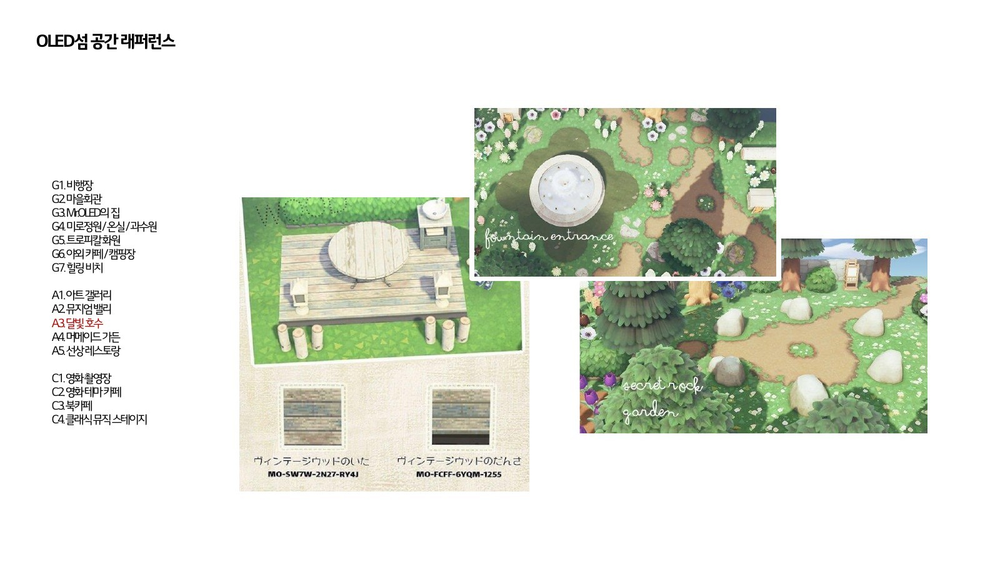
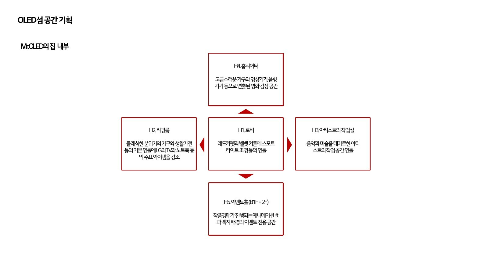
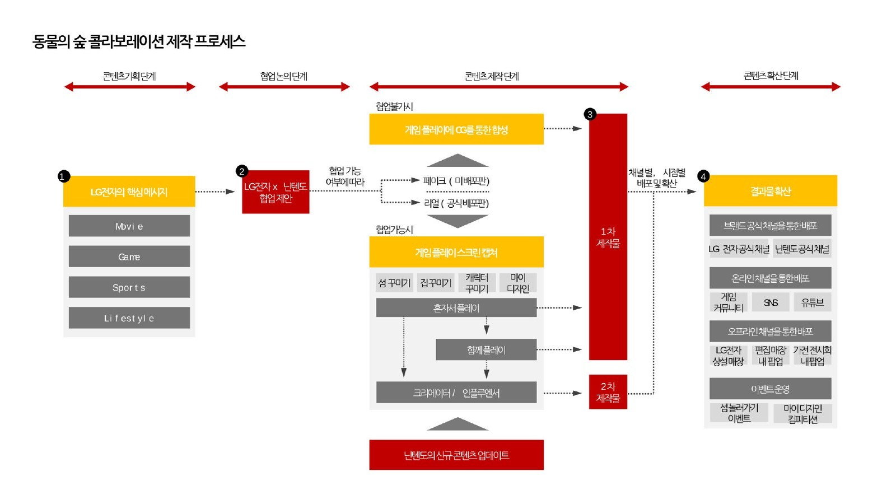
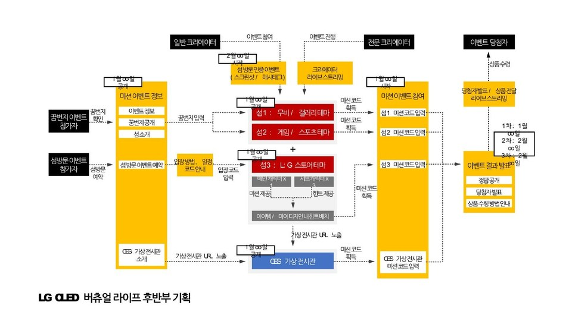
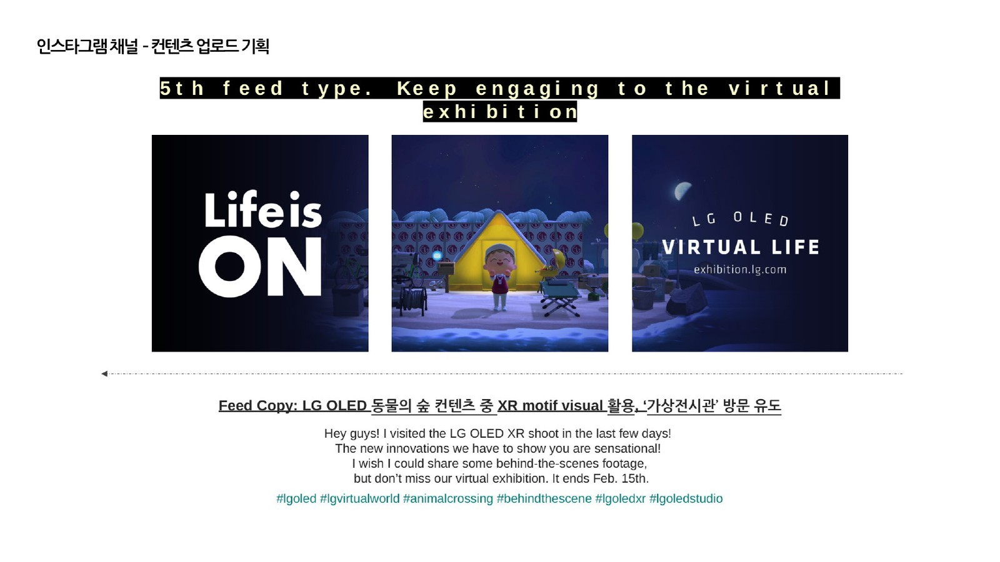
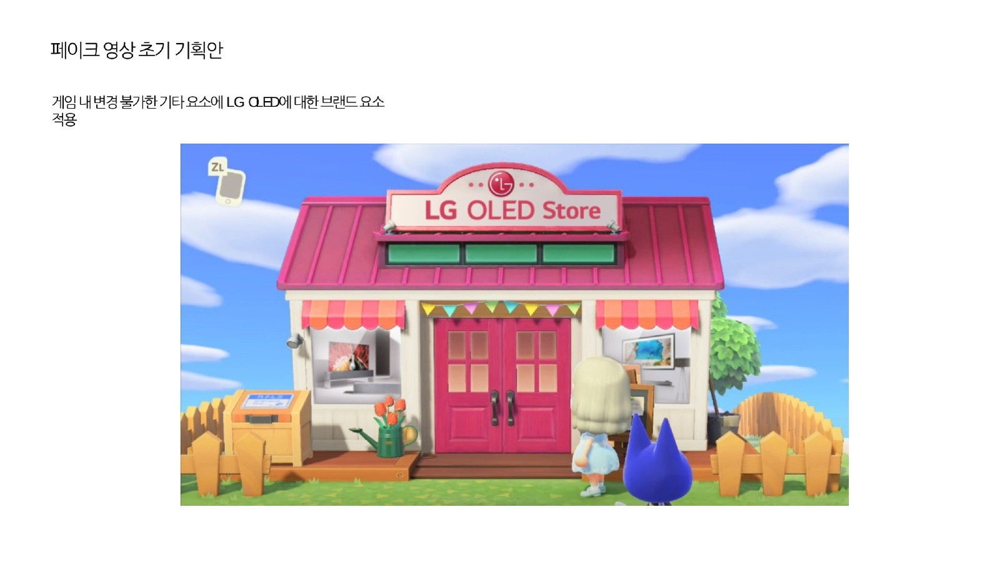

낯선 세계 — 아이보다 먼저 들어가 봤다 (1) - 낯선 세계, 부모가 먼저 들어간다
나는 2012년부터 동물의 숲을 꾸준히 살펴봤다. 2014년부터 2015년 사이에는 프로젝트 조사용으로 게임을 산 기록도 있다. 2020년에는 그 관심 옆에 새 프로젝트 준비와 아이와의 놀이가 함께 놓였다. 무엇이 먼저였는지를 하나로 정하면 실제 순서가 사라진다.

시리즈 안내 : 이 글은 세 편 가운데 첫 번째다. 1편에서는 동물의 숲을 위해 만든 두 판본과 그 섬의 실행을 다룬다. 2편은 포켓몬을 혼자 좋아하던 시간이 함께하는 경험으로 바뀐 과정을, 3편은 계획과 실행 사이의 차이를 다룬다.
01먼저의 순서부터 다시 본다
2020년 2월에는 프로젝트 미팅을 준비하며 예전 기록을 다시 꺼냈다. 4월에는 아이와 화면 밖에서 이어지는 놀이 도구를 시험했다. 직접적인 캠페인 기록은 6월 말부터 시작된다. 그 뒤 8월의 컨셉안과 12월의 CES 구조를 만들었다. 이듬해 1월에는 미션과 소셜 운영으로 이어지며 해를 넘기는 장기 실행으로 구조화됐다.
이 글의 출발점은 2012년부터 이어진 관심이다. 2020년에는 프로젝트 준비와 봄의 놀이, 6월 이후의 실행이 차례로 기록됐다. 이 순서는 확인할 수 있지만 어느 하나를 다른 하나의 원인으로 정할 근거는 없다.
여기서 「먼저」라는 말도 한 가지 뜻으로 쓰이지 않는다. 관심을 먼저 가진 시점, 프로젝트를 준비한 시점, 아이와 함께 플레이한 시점, 실제 공간을 만들고 운영한 시점이 따로 있다. 네 시점을 한 줄로 이으면 방향은 단순해지지만, 당시 남은 기록은 오히려 서로 다른 종류의 일을 보여준다. 그래서 이 글에서는 시작점을 하나 고르기보다 각 기록이 열어 주는 범위를 구분해 읽는다.
날짜가 선명하다고 인과까지 선명해지는 것은 아니다. 2월에는 프로젝트를 준비했고, 4월에는 화면 밖으로 놀이를 확장해 봤다. 6월 이후에는 실행이 길게 이어졌다. 이 셋을 함께 놓으면 2020년 봄과 여름에 무엇이 가까이 있었는지는 보인다. 하지만 무엇이 무엇을 낳았는지는 알 수 없다. 순서를 지키는 일은 이 경험을 과장하지 않기 위한 첫 조건이다.
02두 판본은 서로 다른 질문에 답한다
2020년 8월에 나는 37쪽짜리 컨셉안을 만들었다. 2021년 2월에는 98쪽짜리 결산본으로 프로젝트 전 기간을 정리했다. 쪽수만 보면 앞의 것이 짧은 초안이고 뒤의 것이 완성본처럼 보이지만, 두 문서는 그런 상하 관계가 아니다.
37쪽에서 나는 섬의 구역과 집 내부, 공간을 잡기 위해 살펴본 장면들을 자세히 그렸다. 집도 로비, 거실, 작업실, 홈시어터, 이벤트 공간으로 나눴다. 공간의 기준이 된 장면을 모은 보드도 이 판본에만 넣었다. 98쪽에서는 사전 조사와 섬 제작을 지나 CES 연계, 꿈번지, 미션, 소셜 운영과 영상 확산까지 정리했다. 앞의 문서에만 있는 설계 상세가 있고 뒤의 문서에만 있는 실행 기록이 있다.
그래서 두 판본을 함께 읽어야 한다. 37쪽은 섬을 어떻게 설계했는가에 답하고, 98쪽은 그 섬으로 무엇을 했는가에 답한다. 각각 다른 질문을 맡은 고유한 판본이다.
같은 섬을 다루지만 페이지가 맡은 역할도 다르다. 37쪽에서는 구역 하나를 왜 그 자리에 두었는지, 집 안을 어떤 기능으로 나눴는지, 어떤 장면을 공간의 기준으로 삼았는지가 길게 보인다. 98쪽에서는 그 장소가 공개된 뒤 방문자가 어떻게 들어오고, 무엇을 찾고, 어떤 피드와 영상을 통해 다시 만나게 되는지가 길게 보인다. 설계안의 밀도와 결산본의 밀도는 서로 다른 방향으로 높다.
이 차이를 초안과 완성본의 차이로 읽으면 37쪽에만 남은 공간 판단이 사라진다. 반대로 37쪽만 보면 공개 이후의 운영과 확산을 놓친다. 나는 두 문서를 나란히 두고, 앞의 문서에서는 장소와 장면을, 뒤의 문서에서는 시간과 행동을 읽었다. 이 방식으로 보면 37쪽과 98쪽은 서로를 보완하지만 서로를 대신하지 않는다.


034S를 공간으로 옮겼다
섬을 설계할 때 나는 LG전자의 4S를 네 공간 테마로 옮겼다. 선명한 화질은 홈시네마로, 매끄러운 화면 전환은 스포츠로, 빠른 응답은 게임으로, 얇은 형태는 갤러리로 번역했다. 각 속성을 경험할 장면과 활동을 정했다. 제품의 속성을 걸어 다닐 수 있는 장소로 만든 것이다.
공간은 세 섬으로 나눴다. 갤러리와 시네마를 담은 OLED 섬, 게임과 스포츠를 담은 LIT 섬, 스토어 역할의 섬이다. 기획안에는 비행장과 마을회관, 정원과 화원, 카페와 캠핑장, 해변, 갤러리와 호수, 촬영장, 집 안의 여러 방 같은 구역도 적었다. 네 속성을 장면과 동선으로 풀어 세 섬에 나눈 것이 이 설계의 기본 구조다.
섬을 만들기 전에 먼저 정해야 하는 것도 있었다. 캐릭터 이름, 게임 시작일, 섬 이름, 기본 건물 위치처럼 섬을 만든 뒤에는 고치기 어려운 조건들이다. 비행장의 색과 과일 종류, 나무의 수종도 같은 목록에 넣었다. 나는 되돌릴 수 없는 항목을 먼저 고정하고 그 위에 구역과 장면을 쌓았다. 이것은 게임이 준 제약이면서 실제 설계 순서이기도 했다.
4S를 공간으로 번역하는 일은 표어를 벽에 붙이는 것과 달랐다. 홈시네마에서는 무엇을 보게 할지 정했다. 스포츠 구역에서는 움직임을, 게임 구역에서는 반응을 다뤘다. 갤러리에서는 얇은 형태를 어떤 장면으로 보이게 할지 정했다. 네 단어가 네 구역이 되면서 방문자가 걸어 다닐 동선과 활동으로 바뀌었다.
세 섬의 구분도 같은 번역의 결과였다. OLED 섬에는 갤러리와 시네마를, LIT 섬에는 게임과 스포츠를 두고, 스토어 역할의 섬을 별도로 놓았다. 한 섬에 모든 기능을 모으지 않고 성격이 다른 경험을 나눈 뒤 이동으로 연결했다. 구역 목록이 많은 이유는 장식이 많아서가 아니라 네 속성이 집 안팎의 여러 장면으로 풀렸기 때문이다.
게임 안에서는 처음 정한 조건이 뒤의 모든 장면에 계속 남는다. 비행장이나 마을회관의 위치처럼 되돌리기 어려운 항목을 늦게 바꾸려 하면 이미 만든 구역과 동선도 함께 흔들린다. 그래서 나는 바꾸기 어려운 것, 나중에 조정할 수 있는 것, 운영하며 채워 갈 것을 나눠 보았다. 37쪽 판본은 완성된 섬의 사진만이 아니라 그 판단 순서를 함께 남긴 문서다.

04600시간과 1,800시간
이 작업을 설명하면서 나는 서로 다른 두 숫자를 썼다. 프로젝트 약 3개월 시점에는 초기 디바이스 2대에 600시간이 집계됐다. 약 6개월 시점에는 디바이스를 4대로 늘렸고, 집계도 1,800시간이 됐다.
두 숫자는 충돌하지 않으며, 한 사람이 자리에 앉아 일한 총시간도 아니다. 여러 계정과 디바이스로 섬을 운영하며 각 기기에 쌓인 시간을 서로 다른 시점에 찍은 값이다. 초기에는 두 대를 함께 운영했고, 뒤에는 네 대로 늘려 병렬로 진행했다. 하나는 틀리고 다른 하나는 맞는 수치가 아니라 같은 작업의 앞 시점과 뒤 시점이다. 숫자를 크게 보이게 하기보다 제작 조건을 설명하려면 대수와 시점을 함께 써야 한다.
600시간만 떼어 놓으면 프로젝트의 최종 수치처럼 보인다. 1,800시간만 떼어 놓으면 한 사람의 여섯 달 노동시간처럼 보일 수 있다. 하지만 기록의 단위는 디바이스에 누적된 플레이 시간이다. 두 대가 네 대가 되었고 관측 시점도 약 3개월에서 약 6개월로 이동했다. 분모가 달라졌으므로 숫자는 반드시 조건과 함께 읽어야 한다.
이 수치는 제작 방식도 보여준다. 한 화면에서 한 계정만 움직이는 작업을 여러 섬과 여러 계정으로 병렬화하려면 디바이스 자체가 운영 단위가 된다. 제작, 점검, 방문 준비가 한 기기에서 차례로 끝나는 구조가 아니었다. 그래서 시간의 증가는 단순한 작업량 자랑보다 섬을 유지하고 실행한 환경을 설명하는 자료에 가깝다.
05그 섬으로 무엇을 했는가
98쪽 판본에서 섬은 제작 결과에서 실행으로 이어진다. CES의 가상 전시와 연결하고, 꿈번지로 방문할 수 있게 하고, 섬 안에서 수행할 미션과 소셜 채널의 운영 계획을 붙였다. 사전 조사, 섬 제작, 캠페인 기획, 미션, 소셜 운영, 영상 제작을 시기별 단계로 나눠 정리했다. 섬을 공개하는 일과 그 안에서 무엇을 하게 할지를 한 덩어리로 다뤘다.
미션은 두 종류였다. 섬 안에 숨긴 40대의 TV를 찾는 미션과 풍선을 따라 더 빠르게 움직이는 미션이다. 방문 방식도 꿈번지로 체험하는 길과 초대를 받아 체험하고 보상까지 얻는 길로 나눴다. 같은 공간을 보더라도 들어가는 방법과 할 일이 달라지도록 설계했다.
소셜 운영에서는 섬 소개, 일상의 게시물, 실제 제품을 합성한 장면, 가상 전시 연계 같은 피드 유형을 일곱 가지로 나눴다. 운영 계획은 주차별로 배열했다. 영상도 티저, 네 가지 테마 영상, 튜토리얼, 생활 장면과 제작 장면으로 나눠 열두 편 이상을 계획했다. 배경과 소품은 가능한 한 게임 안에서 만들고 일부 재료만 합성한다는 원칙도 세웠다. 섬 안의 경험이 소셜 채널과 영상으로 이어지게 한 것이다.
두 미션은 같은 공간을 서로 다른 속도로 읽게 했다. 40대의 TV를 찾는 미션은 섬 곳곳을 살피며 장면과 물건을 연결하게 하고, 풍선을 따라 움직이는 미션은 이동 자체를 과제로 바꾼다. 꿈번지로 들어온 방문자와 초대를 받아 들어온 방문자에게 같은 참여 조건을 요구하지도 않았다. 접근 방식에 따라 체험과 보상의 층을 나눈 것이다.
소셜 피드와 영상은 섬을 설명하는 부속 홍보물이 아니었다. 티저는 섬을 처음 알리고, 네 편의 테마 영상은 공간의 성격을 나눠 보여줬다. 튜토리얼은 들어오는 방법을 안내했다. 생활 장면과 제작 장면도 별도 영상으로 만들었다. 방문 전의 기대, 방문 중의 행동, 방문 뒤에 다시 꺼낼 장면을 각각 맡긴 셈이다.
게임 안에서 만든 배경과 소품을 우선하고 합성은 필요한 재료에만 제한한 원칙도 중요했다. 화면 밖에서 모든 장면을 새로 만드는 대신, 실제 섬의 모습과 그 안에서 가능한 행동이 콘텐츠의 중심에 남도록 했다. 공개된 영상과 피드가 게임 안의 경험과 멀어지지 않게 하는 제작 규칙이었다.
이 실행층이 98쪽 판본의 역할을 분명하게 만든다. 37쪽에서는 어디를 어떻게 걸어 다니게 했는지 읽을 수 있다. 98쪽에서는 그 공간을 CES와 미션, 소셜 운영에 어떻게 사용했는지 읽을 수 있다. 두 문서를 함께 놓아야 설계와 실행이 모두 보인다.



06일과 놀이와 배움이 가까이 있었다
동물의 숲은 그 시기에 일과 놀이와 배움이 가까이 있던 영역이다. 나는 아이와 동물의 숲을 함께 플레이했고 도움도 받았다. 함께 플레이한 사실과 캠페인의 시간 기록은 각각 남아 있다.
두 기록의 날짜가 정확히 얼마나 겹쳤는지는 자료만으로 알 수 없다. 캠페인 문서에 적은 함께 플레이가 업무 협업인지 가족 플레이인지도 구분되지 않는다. 그래서 프로젝트의 실행과 아이와 함께한 플레이를 각각 확인된 사실로 적었다.
확인되는 범위는 분명하다. 나는 아이와 게임을 함께 했고 도움을 받았다. 같은 해에 프로젝트 준비와 캠페인 실행도 있었다. 다만 가족의 플레이를 프로젝트의 출발점으로 만들거나, 프로젝트 때문에 가족의 놀이가 시작됐다고 쓰면 기록이 말하지 않는 이유를 보태게 된다. 가까이 있었던 두 경험을 가깝게 두되 하나로 합치지 않는 편이 맞다.
이 경계는 아이의 몫을 다루는 방식과도 이어진다. 함께 플레이했다는 사실은 쓸 수 있지만 이름과 나이, 당시의 감정이나 역할을 구체적인 이야기로 만들 수는 없다. 무엇을 도왔는지 세세히 채우지 않아도, 혼자 만든 세계가 아니라는 사실은 남는다. 공개 글에서는 그 정도가 자료와 가족의 경계를 함께 지키는 해상도다.
07만드는 쪽에서도 안전을 먼저 놓았다
2021년에는 아이들을 위한 다른 가상세계의 기획안을 만들었다. 나는 기능을 늘어놓기 전에 사용자 정체성, 공간, 관계, 확장 요소라는 네 축을 먼저 정의했다. 그 문서에서 보호자 도구를 조사와 설계의 독립 항목으로 두었다. 아이가 스스로 탐색하는 자유와 보호자가 확인하고 위임할 수 있는 조건을 같은 설계면에서 살폈다.
이 기록은 제안서다. 여러 차례의 검토를 거치며 서로 다른 시점에 만든 문서이고, 한 파일 안에도 다섯 개 시나리오판과 일곱 개 시나리오판이 함께 있다. 이용자로 먼저 들어간 경험 옆에서, 만드는 사람으로서 안전의 설계도를 제안한 기록이다. 무엇이 실제로 채택됐는지는 이 문서만으로 알 수 없다.
다섯 개 시나리오와 일곱 개 시나리오가 한 문서에 함께 있다는 것은 설계가 한 번에 고정되지 않았다는 뜻이다. 시나리오의 수와 조합을 바꾸면서 사용자 정체성, 공간, 관계, 확장 요소가 어디에서 만나는지 다시 검토했다. 보호자 도구도 완성된 기능 목록이라기보다 아이의 탐색과 보호자의 확인이 어떤 조건에서 공존할 수 있는지를 묻는 항목이었다.
이 제안서를 앞의 동물의 숲 캠페인과 같은 실행 사례로 놓을 수는 없다. 하나는 실제 섬을 만들고 운영한 결산이고, 다른 하나는 만들기 전에 여러 가능성을 비교한 설계 문서다. 다만 이용 경험 옆에서 자유와 확인의 조건을 함께 검토했다는 점은 두 문서를 나란히 볼 이유가 된다.
08오래 보아 온 매체에 소개됐다
캠페인은 내가 오랫동안 보아 온 일본 게임 매체에도 소개됐다. 당시 공개 기록에서 나는 소개 사실과 참여 방법을 담담하게 적었다. 그 매체가 이 작업을 다룬 일은 내게 감회가 새로웠다. 이 글에서는 여기까지만 쓴다.
당시의 기록과 지금의 설명은 시간층이 다르다. 당시에는 어디에 소개됐고 어떻게 참여할 수 있는지를 적었고, 지금은 오랫동안 보아 온 매체가 이 작업을 다룬 일이 감회가 새로웠다고 확인한다. 지금의 감정을 당시의 문장 안으로 밀어 넣지 않고 두 층을 한 문단 안에 나란히 둔다.
소개된 화면은 섬 안에서 끝나지 않은 실행의 또 다른 표면이기도 하다. 설계안의 구역과 결산본의 미션, 피드와 영상이 실제 외부 매체에서 발견될 수 있는 형태로 이어졌다. 그렇다고 소개 자체를 프로젝트의 목표나 성취의 결론으로 만들지는 않는다. 이 글에서 필요한 것은 설계한 공간이 공개 경험과 콘텐츠를 거쳐 외부의 한 기록으로 남았다는 사실이다.

09먼저 해보고 전달하는 일
2023년의 발표에서 나는 아이가 어렸을 때 내가 먼저 해보고, 경험한 것을 전달했다는 요지로 말했다. 2020년에는 부모로서 막아설 것인지, 먼저 가보고 이끌 것인지도 적었다. 이 글에서 확인한 2020년의 기록은 그 발화 범위 안에 있다. 나는 낯선 세계를 설명하기 전에 먼저 들어가 보고, 공간을 만들고, 그 안에서 할 일을 운영해 봤다.
오래된 관심, 프로젝트 준비, 봄의 놀이, 6월 이후 실행이 각각 기록으로 남았다. 먼저 해봤다는 말은 내가 직접 겪고, 만들고, 운영한 범위를 가리킨다. 그 범위에서 경험한 것을 아이에게 전달했다.
먼저 들어간다는 말은 낯선 세계를 모두 이해했다는 뜻이 아니다. 나는 되돌리기 어려운 조건을 고르고 공간을 나눴다. 여러 기기로 운영하며 방문자가 할 일도 설계했다. 그 과정에서 세계의 제약을 직접 확인했고, 무엇을 설명할 수 있는지도 구체적으로 알게 됐다.
37쪽과 98쪽은 그 경험을 서로 다른 방향에서 보존했다. 하나는 장소를 만드는 판단을, 다른 하나는 그 장소를 공개하고 움직이게 한 실행을 남겼다. 아이와의 플레이는 그 옆에 별도의 기록으로 놓여 있다. 이 셋을 한 원인과 결과로 만들지 않고 함께 두었을 때, 내가 전달할 수 있는 경험의 범위도 더 정확해진다.